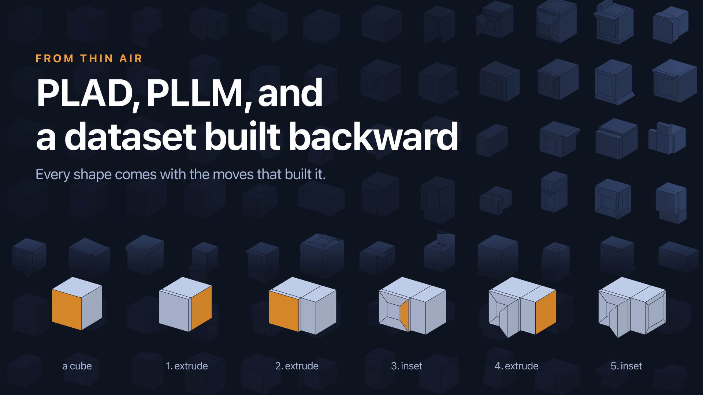
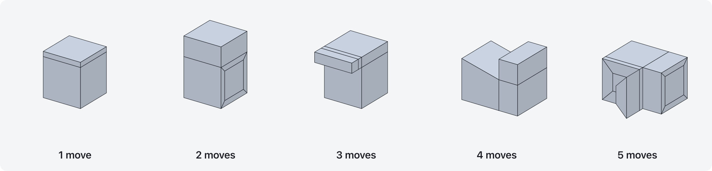
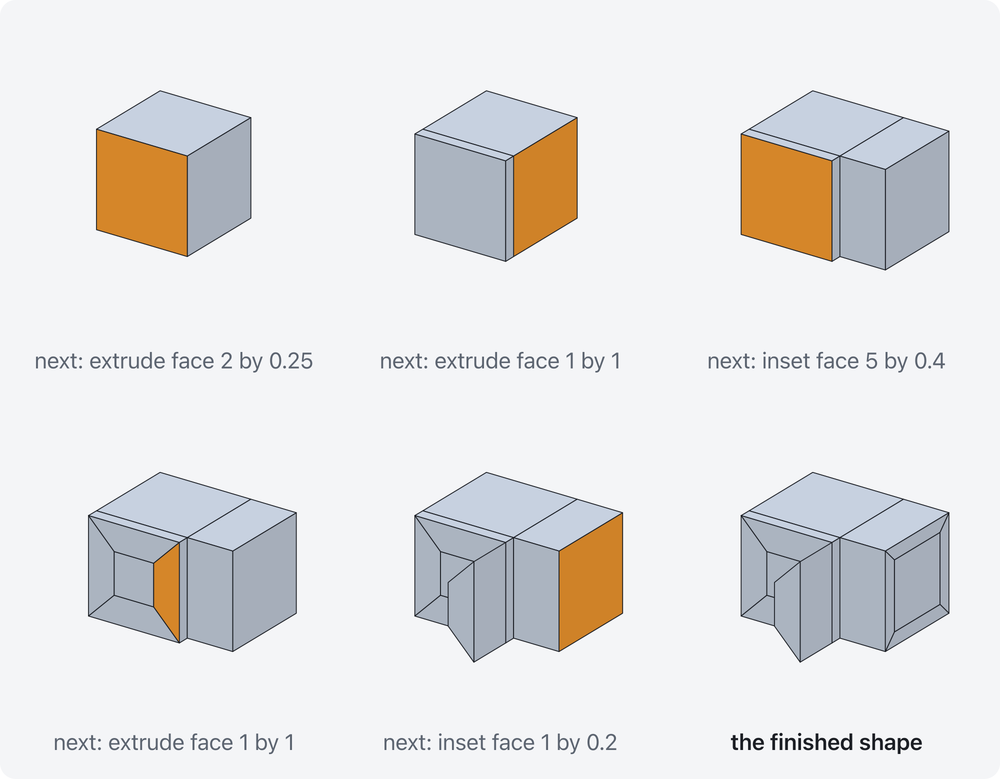
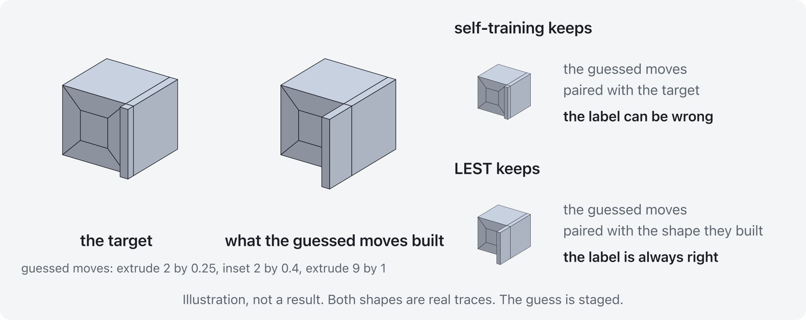
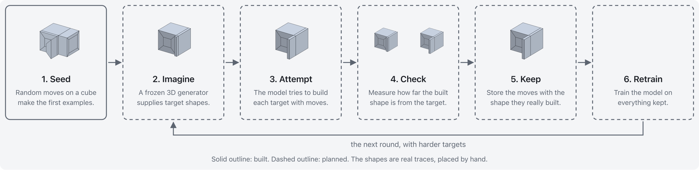
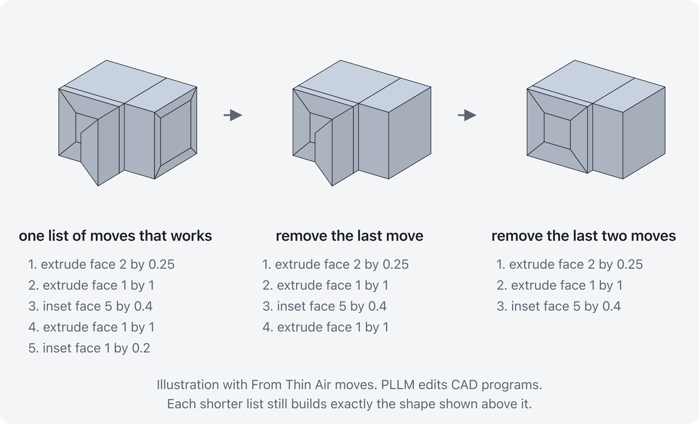

Give public writing a home in the repo. The owner decided that learning in public is part of
the project, and that posts live next to the code with their images and their sources.
What was done
File
Change
public/README.md
New. It lists the posts, describes the folder layout, and states the rules for posts.
public/0001-plad-pllm/make_images.py
New. It makes the six images for the first post from data/round0.npz.
public/0001-plad-pllm/post.md
New. The draft of the first post. It is laid out with headings and bullets for the method, and four of the images are placed in it.
public/0001-plad-pllm/linkedin.txt
New. The short feed post that goes with the article. It is plain text with Unicode bold headings, because LinkedIn feed posts do not render markdown.
render.py
The draw function takes a fill color, a line color and an optional background. The defaults are the old look, and the other images did not change.
public/0001-plad-pllm/images/
New. The six images, each as SVG and as PNG.
The layout gives each post one folder, named with a four-digit number and a short slug.
Path
What it holds
public/README.md
The list of posts, each with its platform and status
public/<NNNN-slug>/post.md
The text of the post
public/<NNNN-slug>/images/
The rendered images the post uses
public/<NNNN-slug>/make_images.py
The script that makes those images from data in the repo
public/<NNNN-slug>/sources.md
The papers and links the post cites
The rules for posts
Posts point back to the journal. Every number in a post comes from a journal entry or a script in the repo.
Result images are real. They are rendered from real traces. An image that only explains an idea is labeled as an illustration.
Results come first. A post about a result waits until the result exists. A post about what was learned can go out at any time.
Sources are credited. Authors are named, every paper is linked, and figures are our own renders.
The renders for the first post
The owner approved the renders after the folder was set up. Every shape in them is a real
trace from round zero. The first run made three images in 2.0 seconds on an Apple M2 Max with one process, including
loading the dataset. The owner then asked for diagrams of the method, and the run with five
images took 3.0 seconds. The owner asked for a cover image last, and the run with all six took
3.1 seconds.

The cover, at 1920 by 1080. The wall is 84 clean round-zero shapes, and the row along the bottom is one trace step by step.

The strip. One clean shape for each number of moves, all from one camera at one scale.

One trace step by step. The orange face is where the next move lands.

The LEST illustration. The same guess makes one pair for self-training and one for LEST. It is labeled as an illustration, because the guess is staged.

The loop. Only the seed step has a solid outline, because only that step is built.

The edits illustration. Removing moves from the end of a list gives more correct pairs. It uses our moves, not PLLM's CAD programs.
How the illustration was made. The script finds two real traces that share every move except the amount of the last one. One plays the target and the other plays the guess. A model did not make the guess.
How the PNG files are made. The script calls rsvg-convert when it is installed. Without it, only the SVG files are written.
What it means
Every image in a post can be rebuilt. Each post carries the script that made its images.
The journal stays the record. Posts draw on it and do not replace it.
Not done
The post is a draft. It is not published, and the owner has not reviewed the copy in the repo.
The post has no sources.md yet. Its two paper links are at the end of the text.
The strip image is not placed in the post. The other four images are.
The edits illustration shows removal only. PLLM also adds steps, and the image does not show that.
The claims about the papers are not checked. The draft says PLAD's method was about 32 times faster than reinforcement learning on one test, and it describes both papers' conclusions.
The two papers have not been read in full. The notes on them come from abstracts and search results.
Open questions
Is this layout the one the owner wants?
Are these the right traces for the first post's renders?
Next step, proposed
Read both papers in full, check the post's claims against them, and write
sources.md. This does not start until the
owner agrees.